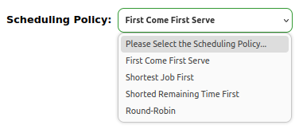

This is for an image.
The mode shift between user and kernel is done by the hardware
The mode shift happens when there is an interrupt or syscall
The Hardware is responsible to load the information in user-stack to k-stack, then shift to the kernel mode, and then go to the interrupt handler. If it is a timer interrupt, then kernel will run the Timer Handler routine. Once the interrupt is dealt with, the kernel will move onto perform the context switching.
Now the kernel will first save the regsiters of the user process A which was interrupted into its PCB i.e. PCB-A. The data stored in PCB is obtained from the k-stack of Process A which was copied by the hardware from the user stack.
Once storing into PCB is done, its now time to restore the register info from the PCB of a new process selected by the scheduler. The register info is saved into the k-stack of the new process, let's name it B. Now the hardware plays it's role again and populates the user stack of process B with the info stored in k-stack of process B. Once this is done, it changes the mode from user to kernel.
Now the CPU in user mode executes process B. This process might be context switched with some other process if an interrupt arrives.
Testing for single correct options
Testing for multiple correct options